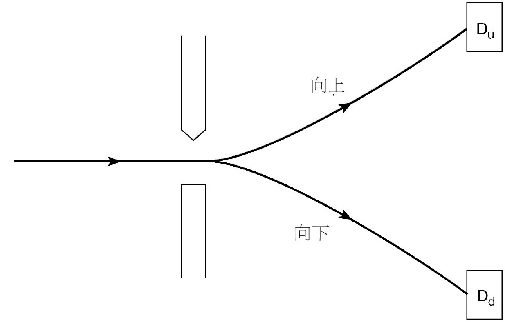

当代量子理论被发现时，占据舞台中心的物理问题是关于原子行为和辐射行为的。这段最初发现的时期之后，跟随而来的是20世纪20年代末和30年代初这段持久狂热的探索期。在这段时间内，新思想被广泛应用到其他物理现象中。例如，稍后我们就会看到，量子理论对晶体固体中的电子行为，给出了具有重大意义的新理解。我曾经听保罗·狄拉克谈过这段快速发展时期，他说这段时期是“二流研究者在做一流工作”。几乎在其他任何人的口中，这些词都是不太礼貌的奚落。但是，对于狄拉克来说，并不是这样。在他的全部生活中，他都是单纯地就事论事，直接说他想说的，不加任何修饰。他的话仅仅是打算向人们传递一些东西，传递从那些最初的基本见解中流淌出来的丰富认识。
量子理论的成功应用一直在持续，势头不减。现在，我们能用量子理论同样有效地去讨论夸克和胶子行为。想到这些核物质的成分最多只有20世纪20年代先驱者们关心的原子的亿分之一大小，这真是一个令人惊叹的成就。物理学家知道如何去做计算，而且他们发现答案不断以惊人的精度涌现出来。例如，量子电动力学（电子和光子的相互作用理论）产生的结果与实验非常接近，达到的精度比一根头发丝的宽度相对于洛杉矶和纽约之间的距离这样的误差还要小！
就这些方面而言，量子理论是一个巨大的成功，可能是物理科学史上最伟大的成功故事。但是，仍然存在一个深刻的矛盾。物理学家有能力去做计算，但是他们仍然不理解理论。严峻的解释性问题仍然没有解决，因此也是持续争论的对象。这些引起争论的问题特别关系到两个困惑：该理论的几率特征的意义，以及测量过程的实质。
经典物理中也有几率，它们的起因在于人们对正在进行之事的某些细节不得而知。一个范例就是扔硬币。没人会怀疑，牛顿力学决定着硬币在旋转过后如何落地——没有命运女神福尔图娜直接干预的问题；但是，硬币运动对其被扔方式的精确微小的细节（我们察觉不到）非常敏感，我们无法准确预测硬币落下的结果是什么。然而，我们确实知道，如果硬币是公正的，机会应该均等，即正面是1/2，背面也是1/2。类似地，对于一个真正的骰子，任何一个特定数字所在的面，朝上的几率都是1/6。如果有人问，扔出1或者2的几率是多少，可以简单地将独立的几率加起来，结果就是1/3。这个加法定律能够成立，是因为扔出1的过程和扔出2的过程是有区别的，并且是相互独立的。既然它们间没有相互影响，我们就可以将结果的几率加起来。这似乎相当直截了当。然而，在量子世界就不一样了。
首先考虑电子和双缝量子实验的经典等效实验是什么。一个普通的类比是往有两个洞的篱笆墙上扔网球。球有一定的几率穿过其中一个洞，还有一定的几率穿过另一个洞。如果我们关心的是球落在篱笆墙另一边的机会，由于球必须通过其中一个洞或者另一个洞，我们仅需将这两者的几率加在一起（就像我们计算骰子数字1或数字2两面朝上的几率一样）。对量子来说，情况就变得不同了，因为叠加原理允许电子同时通过两缝。经典物理中相互有别的几率在量子力学中则相互纠缠在一起。
结果，在量子理论中，几率相加定律就变了。如果有人必须对大量未观测到的中间几率求和，那必须是将几率振幅 而不是几率本身加在一起。在双缝实验中，我们必须将通过狭缝A的几率振幅加到通过狭缝B的几率振幅上。回想一下，几率是几率振幅通过一种平方运算计算得来的。先相加后平方的结果，就是产生数学家所称的“交叉项”。可以通过考虑如下简单的数学方程来体验一下这个思想：
（2+3）2 =22 +32 +12
这个“额外”的12就是交叉项。
或许，这看起来有点神秘。基本的概念是这样的：在日常生活中，为了得到最终结果的几率，仅需将独立的中间几率加在一起。在量子世界中，加和这些非直接观测的中间几率，需要更加微妙复杂的方法。这就是量子计算涉及交叉项的原因。既然几率振幅实际上是复数，这些交叉项就包括了相位效应，因此既可以是相长干涉，也可以是相消干涉——这正是双缝实验中所发生的。
简言之，经典几率对应于不得而知，它们可以通过简单相加进行结合。而量子几率的结合，显然是以一种更加难以捉摸和难以描画的方式进行的。这就提出了问题：是否可以将量子几率理解为也来源于物理学家对正在发生之事的所有细节不得而知？进而，潜在的基本几率（对应于难以企及但是对事实真相完全详尽的了解），是否仍然可以像经典几率一样相加？
在此疑问的背后，部分物理学家存在一个深深的渴望：恢复物理的决定论，即使它是蒙着面纱的决定论。例如，考虑放射性原子核（不稳定且易于破碎）的衰变。量子理论可以预言的仅仅是衰变发生的几率。比如，可以说一个特定的原子核有1/2的几率将在下个小时内衰变，但不能预言该特定原子核在那个小时内是否确实会发生衰变。然而，也许那个原子核有一个内部小时钟，精确地指定它在何时衰变，但是我们无法读到。如果确实是这样，并且其他同类型的原子都有自己的内部小时钟——小时钟的不同设置会导致它们在不同的时间衰变，那么我们称为几率的东西就只是产生于我们对物理知识的不得而知，即我们无法了解那些隐藏的内部小时钟是如何设置的。衰变对于我们来说似乎是随机的，实际上它们完全是由这些未知的细节决定的。最终事实就是，量子几率与经典几率没有差别。这类理论被称为量子力学的隐变量 解释。事实上它们是一种可能性吗？
著名的数学家约翰·冯·诺伊曼相信他已经表明，量子几率不同寻常的性质暗示它们绝不能被解释为对隐变量不得而知的后果。实际上，在他的论断中有一个错误，该错误几年后才被发现。后面我们会看到，量子理论的决定性解释是可能的，其中几率产生于对细节的不得而知。然而，我们还会看到，按照这个方式获得成功的理论还有其他性质，这些性质对大多数物理学家似乎都没有吸引力。
我们在本章中考虑的问题，有一个方面可以被描述为如下提问：物理世界的量子成分，比如行为模糊且不连续的夸克、胶子和电子，如何能够形成日常经验中清晰又可靠的宏观世界？通过过去25年的进展，人们对这个转变的认识向前迈出了重要的一步。物理学家们已经认识到，在许多情况下比之前更严肃地考虑量子过程实际发生的环境是非常重要的。
传统想法认为，除了那些量子对象，环境就是空的，量子对象之间的相互作用是明确考虑的主题。事实上，这种理想化的处理方式并不是总能实现，而且在它不能实现的地方，这个事实会带来重要结果。几乎无处不在的辐射就曾经被忽略。实验发生在光子海洋的严密包裹中，其中的一些来自太阳，一些来自普遍的宇宙背景辐射。宇宙背景辐射是宇宙诞生大约50万年后留下的萦绕回声。那时，宇宙刚刚变得足够冷，使物质和辐射能从它们先前的普遍混合中相互分离出来。
事实证明，考虑这个几乎无处不在的背景辐射，后果就是影响相关几率振幅的相位。在某些特定的情况下，考虑这个所谓的“相位随机化”会有以下效应：在量子几率的计算过程中，交叉项几乎全部被淘汰。（粗略地说，就是正量和负量大约一样多，取它们的平均值，结果接近于零。）这一切都能以相当惊人的速度发生。该现象称为“退相干”。
退相干受到一些人称赞，认为它提供了一个线索让人去理解微观量子现象和宏观经典现象之间如何相互联系。不幸的是，他们只对了一半。退相干能使一些量子几率看起来更像经典几率，但是不能使它们完全一样。核心困惑仍然存在，被称为“测量问题”。
在经典物理中，测量是不成问题的，因为它只是对真实情况的观测。例如抛硬币问题，事先我们可能只能认定硬币正面朝上的几率是1/2，如果我们正好看到正面朝上，原因仅仅在于它就是已经发生的事实。
在传统量子理论中，测量是不同的，因为叠加原理将二选一的、结果相互排斥的几率结合在一起。直到最后一刻，它们中的一个突然单独浮出水面，成为此刻实现的事实。我们已经知道，思考这个问题的一个方法就是将其描述为波包塌缩。电子的几率本来分散在“这儿”“那儿”，以及“任何地方”，但是当物理学家对它提出实验性问题“你在哪儿？”时，就在这个特定的时刻，答案“在这儿”出现了，然后所有其他地方的几率都塌缩到这唯一的事实上。到目前为止，我们的讨论中还有一个大问题没有得到解答：波包塌缩究竟是如何发生的？
测量是一连串关联的结果。通过测量，微观量子世界的事物状态能够产生在日常世界中的实验室测量仪器上观测得到的对应信号。我们可以通过测量电子自旋 的实验来说明这一点。这是一个略显理想化但不会引起误导的实验。自旋的性质在电子身上表现为它们好像是小磁体一样。由于一种无法形象化的量子效应——我们只能请读者相信它，电子的小磁体仅能指向两个相反的方向，通常我们称之为“向上”和“向下”。
实验通过一束最初未被极化的电子束来实施，也就是说，电子处在“向上”和“向下”机会均等的叠加状态上。让这些电子穿过一个非均匀磁场。因为自旋的磁效应，它们将会根据自旋取向发生向上或向下的偏转。然后，它们将通过两个恰当放置的探测器Du 和Dd （可以是盖革计数器）中的一个。接着，实验者就会听到这一个或那一个探测器的咔嗒声，它们分别记录了自旋取向向上和取向向下的电子。该实验叫作斯特恩——革拉赫实验，是以首次进行这类研究的两位德国物理学家命名的。（事实上，实验是用原子束进行的，不过控制着所发生情形的是原子中的电子。）我们应该如何分析所发生的情形呢？
如果自旋向上，电子将向上偏转，接着通过Du 探测器，Du 发声，实验者就可以听到Du 的咔嗒声。如果自旋向下，电子将向下偏转，接着通过Dd ，Dd 发声，实验者就能听到Dd 的咔嗒声。在此分析中，我们能够看到所发生的情形。它呈现给我们的是一连串关联结果：如果……接着……接着……。但是在真实的测量场合，这些环节仅有一个会发生。是什么使这个特定事件发生在这个特定场合呢？是什么决定这次的答案是“向上”而不是“向下”呢？
退相干不能为我们回答这个问题。它所做的就是使分离的环节联系更紧密，使它们更像经典情形，但是它并没有解释，为什么某个特定环节会在某个特定情况下实现。测量问题的本质是寻求对这种特异性之起源的理解。我们将纵观已经提出的各种回应，但是我们会看到，它们中没有一个完全令人满意或者不留困惑。这些提议可以按照以下标题进行分类。

图6 斯特恩——革拉赫实验
（1）不相关
一些解释者试图巧妙地解决这个问题，他们的提议是不相关。赞成这个立场的一个观点是实证主义者的断言：科学就是关联现象，不应该渴望去理解它们。如果我们知道如何去做量子计算，并且所获答案与经验的关联高度令人满意（事实也确实如此），那就应该是我们想要的全部。在智力上，贪婪地要求更多是不合适的。实证主义的一个更完善的形式体现为所谓的“一致性历史”方法。该方法为获得量子预测结果制定了对策，这些结果很容易被解释为从使用经典测量仪器而来。
另一种也属于不相关类别的观点是说，量子物理根本不应该试图去谈论独立事件，而应该适当地去关注“整体”，也就是事件集合的统计性质。如果确实是这样，纯粹的几率解释就是人们可以合理期望的全部。
在此大类中的第三类观点声称，波函数与物理系统的状态根本无关，而是与人类对这些系统的认识有关。如果有人仅从认识论方面思考，那么“塌缩”就是毫无问题的现象：之前，我不知道；现在，我知道了。然而，被声称全部存在于思想中的事物，其表现实际上却应该满足一个物理方面的方程，如薛定谔方程，这一点似乎很奇怪。
所有这些观点都有一个共同特征。它们对物理学的任务都采取了极简化的看法。具体而言，它们假定物理学不关心如何理解具体物理过程的细节特征。这个观点，可能与某一类哲学倾向意气相投，但是与科学家的思想完全不相容。科学家的雄心壮志就是去获得对物理世界发生之事可达到的最大程度的理解。如果退而求其次，就是对科学的背叛。
（2）大系统
当然，量子力学的创建者们很清楚测量对这个理论提出的问题。特别是尼尔斯·玻尔非常关心这个问题。他提出的答案后来被称为哥本哈根解释 。其核心思想是经典测量仪器发挥着独特作用。玻尔认为，正是这些大型测量设备的介入产生了确定性效应。
经典力学在描述日常生活中发生的物理过程方面取得了相当大的成功。因此，甚至在测量问题还没有出现之前，就需要有某种方法去看人们如何从量子理论中再现这些巨大成功。以失去对宏观世界的理解为代价来描述微观世界是毫无用处的。这个要求叫作对应原理 ，大致就是，“大”系统（大的标准由普朗克常数设定）的行为方式应该极其接近牛顿方程所描述的。后来，人们开始认识到，量子力学和经典力学间的关系，比这一简单的描述所表达的要微妙得多。后面我们会看到有一些宏观现象确实从本质上展现了特定的量子性质，甚至包括可能的技术开发，就像在量子计算中那样。然而，这些是在比较特殊的环境中才能出现的，对应原理的大致趋势也处在正确的方向上。
玻尔强调，测量同时涉及量子对象和经典测量仪器，并坚持认为应该将两者的相互介入考虑成一个单一的整体事件（他称为一个“现象”）。在连接一端到另一端关联结果的链条上，只要始终保持链条的两端不分离地连接在一起，一个特定结果的特定性究竟在什么地方出现，就成为可以避免的问题。
乍看之下，这个提议有一些吸引人的地方。走进一个物理实验室，你会发现实验室中到处都是玻尔所说的各种仪器。然而，这个提议仍然有些地方值得怀疑。它的解释是基于二元性的，似乎物理世界的成员由两类不同的存在组成：不确定的量子对象和确定的经典测量仪器。然而实际上，仅有一个唯一的一元物理世界。那些经典仪器的部件，自身就是由量子成分构成的（根本上说，就是夸克、胶子和电子）。关于确定的仪器如何从不确定的量子基础上出现这个问题，原先的哥本哈根解释无法成功解答。
尽管如此，玻尔和他的朋友可能还是在正确的方向向人们招手，虽然还不够有力。我认为，今天大多数从事量子研究的物理学家，会认同（或可称为）新哥本哈根解释。该观点认为，宏观仪器的巨大和复杂在某种程度上使其起着确定性作用。当然，这究竟是怎样发生的，我们还没有充分了解，但是我们至少可以将它与大系统的另一个性质（同样没有完全了解）关联起来。这就是它们的不可逆性 。
除了一个对目前的讨论没有真正意义的例外，物理的基本定律都是可逆的。为弄清这究竟是什么意思，我们与海森堡反其道而行，假设能够制作一段表现两个电子相互作用的电影。电影向前播放或向后播放，意义是等同的。换句话说，在微观世界，时间没有内在方向来区分将来和过去。在宏观世界，事情显然是不一样的。各种系统运行会变慢，日常生活也无法逆转。在弹跳球影片中，若球弹得越来越高，影片就是在倒着播放。这些效应与热力学第二定律有关，该定律称：在一个孤立系统中，熵（无序的度量）永远不减少。发生这一现象是因为，趋向无序的途径比趋向有序的途径要多得多，于是混乱能轻而易举取得胜利。想一想你的桌子会是什么情况，如果不经常整理的话。
这样一来，测量就是不可逆地登记微观世界事物状态的宏观信号。因此，它包含了时间的内在方向：之前没有结果，后来有了结果。因此，如下假设是有一定道理的，即对复杂大系统的充分理解（完全解释了它们的不可逆性），或许也可为理解它们在量子测量中所起的本质作用提供有价值的线索。然而，就当前掌握的知识情况，这仍然是一个虔诚的愿望，而不是一项切实的成就。
（3）新物理学
有些人已经考虑到，相对于简单地进一步推进已经为科学界所熟悉的原理，解决测量问题将需要更为彻底的思考。吉拉尔迪、里默和韦伯沿着这些创新路线，给出了一个特别有趣的建议（已经被称为GRW理论 [1] ）。他们提出，随机的波函数塌缩是空间中一个普适的性质，只不过塌缩发生的速率依赖于系统包含的物质的量。对于量子对象自身，这个塌缩速率太小，并不会有任何明显的效应，但是对于宏观量的物质（例如，在一个经典测量仪器中），它就变得非常快，实际上就是一瞬间。
原则上，该建议能够通过精细实验来进行研究，这些实验的目的是探寻这种塌缩倾向的其他表现。然而，在缺乏此类经验证实的情况下，大多数物理学家认为GRW理论由于太特别 而不具有说服力。
（4）意识
在对斯特恩——革拉赫实验的分析中，我们看到关联链条的最后一个环节，是由人类观测者来听取计数器发出咔嗒声。我们对其结果有确切认识的每一个量子测量，都把人们对结果有意识的认识作为它的最后一步。意识是人类对物质和精神交界处的体验，这种体验尚未理解又不可否认（除了某些哲学家）。毒品或脑损伤的后果就清楚地表明物质可以作用在精神上。为什么我们不能期望一个与之相反的能力，即精神作用在物质上呢？这样的事似乎可以发生，比如当我们执行抬起胳膊的意志时。那么，可能正是有意识的观测者的介入决定了测量的结果。乍一看，该提议有些吸引力，并且有许多非常杰出的物理学家支持这个观点。尽管如此，它也面临一些非常严峻的困难。
在大多数时间和大多数地方，宇宙没有意识。我们是否应该假设，在遍及这些宇宙空间和时间的广袤地带，任何量子过程都不会导致确定的结果？假设某人要建立一个计算机实验，结果都打印在一张纸上自动保存起来，并且直到六个月后才有观测者进行查看。是不是只有在观测者查看后，纸上才能出现明确的打印结果？
这些结论并不是完全不可能，但是许多科学家认为它们完全没有合理之处。如果我们考虑薛定谔猫的悲惨故事，问题就会进一步加剧。那只不幸的动物被关在一个盒子里，盒子中还有一个放射性源，它在下一个小时内有一半对一半的机会衰变。如果衰变发生，发出的辐射将会触发毒气的释放，猫就会被立即杀死。将传统量子理论原理应用到这个盒子及盒中之物上，得出的暗示是，在一个小时后，且在一个有意识的观测者掀起盒盖前，猫将处于“活”和“死”机会均等的叠加态上。只有当盒子被打开后，才会有几率塌缩，结果是要么发现一具确定的冰冷的尸体，要么发现一只确定的活蹦乱跳的猫。但是，这只猫自己是不是确实知道它是死的还是活的，而不需要人类介入来帮助它得出结论？或许我们应该因此得出结论：猫的意识在确定量子结果方面和人类的意识一样有效。那么，我们在哪里止步？虫子也能塌缩波函数吗？确切来说，它们可能没有意识，但是人们倾向于假设，通过一种方式或是另一种，它们具有明确的非活即死的性质。这类困难已经阻碍了大多数物理学家去相信，假定意识有独特作用是解决测量问题的方法。
（5）多世界
一个更加大胆的建议是完全拒绝塌缩思想。它的拥护者断言，量子形式体系应该被更加严肃认真地对待，而不是从外部给它强加一个有特定目的的假设，即波函数存在不连续变化。相反，人们应该承认，每一件能发生的事情都确实 发生了。
那么，为什么实验者会有相反的印象，即发现电子这时是在“这儿”，而不是在其他地方？给出的答案是，这是本宇宙中观测者的狭隘看法，而量子实在要比该宇宙中观测者所看到的图像大得多。不仅存在一个薛定谔猫活着的世界，还有一个与之平行但分离的薛定谔猫死了的世界。换句话说，在每一个测量行为中，物理实在都会分成多重独立宇宙，在每一个宇宙中，不同的（克隆的）实验者将观测到测量中可能出现的不同结果。物理实在是一个多宇宙，而不是简单的一个宇宙。
由于量子测量一直在发生，这个提议就是一个惊人的本体浪费。可怜的奥卡姆的威廉（他的逻辑“剃刀”正是为了剃掉不必要的多余假定）一旦想到对象如此快速增长，一定会死不瞑目。不妨用一种不同的方法来想象这个异乎寻常的巨大激增，将它的发生定位在观测者的思想或头脑内部，而不是外部的宇宙中。这一举动将多世界解释转变为多思想解释，但是这几乎没有减轻该建议的巨大浪费。
刚开始，仅有量子宇宙学家被吸引到这个思维方式上，他们试图将量子理论应用到宇宙自身。当我们仍然对微观和宏观如何联系在一起感到疑惑时，将这个理论延伸到宇宙方向上是一个大胆的举动，它的可行性不一定很明显。但是，如果如此延伸，多世界方法似乎是唯一可用的选择，因为当宇宙包含进来后，就没有空间留给科学去引入外部大系统效应或意识效应。近来，在其他物理学家当中，接受多世界方法的人似乎有一定程度的扩大倾向。但是，对于我们中的大多数人来说，它仍然只是一个形而上学的汽锤，可用来打破公认的坚硬的量子外壳。
（6）决定论
1954年，戴维·玻姆发表了一个量子理论，该报告完全是决定性的，但是它给出的实验预测与传统量子力学完全相同。在这个理论中，几率单纯地来自对特定细节的不得而知。这个卓越的发现促使约翰·贝尔重新审视了冯·诺伊曼的论点，因为冯·诺伊曼认为这是不可能的。此外，贝尔还展示了冯·诺伊曼错误结论所依据的有问题的设想。
玻姆实现这个了不起的成就是通过将波和粒子分离来完成的。按照哥本哈根思想，波和粒子是成对的，相互补充，不可分离。在玻姆理论中，存在经典粒子，和艾萨克·牛顿自己希望的经典粒子一样毫无疑问。当测量它们的位置和动量时，只不过是在观测明确的事实是什么。然而，除了粒子之外，还存在与之完全分离的波。波的表现形式在任何时刻都囊括了整个环境的信息。这个波并不能被直接识别，但是它会产生经验性结果，因为它会按照某种方式影响粒子的运动，并且能附加在常规的力效应之上。当然，力效应也能影响粒子的作用。正是这隐藏的波（有时也被叫作“导波”或者“量子势”之源）敏感地影响了粒子，并成功产生干涉效应图样和相关的几率特征。这些导波效应具有严格的确定性。尽管结果可以精确预测，但它们非常精细地依赖于粒子的真实位置，对位置的细节也相当敏感。正是这种对精细变化的敏感性，使量子物理过程产生了随机现象。因此，在玻姆理论中，粒子位置起着隐变量的作用。
为了更深入理解玻姆理论，研究一下它如何处理双缝实验很有启发意义。在玻姆理论中，电子有明确的粒子图像，所以其必须明确地穿过两道缝中的一道。我们在先前的讨论中说这是不可能的，那么，究竟哪里出了问题？隐波效应使我们能够避开先前的结论。不考虑隐波的独立存在和影响，下面的说法确实是正确的：如果电子穿过缝A，缝B就是不相关的并且不是打开就是关闭。但是玻姆的波囊括了整个环境的瞬时信息，因此在缝B打开和关闭的情况下，它的形式是不同的。这个差异对波引导粒子的方式产生了重要影响。如果缝B是关闭的，大多数粒子就会被引导到缝A对面的探测屏上；如果缝B是打开的，大多数粒子就被引导到探测屏的中点处。
有人可能认为，一个确定的、可描画的量子理论版本会对物理学家有极大的吸引力。事实上，很少有物理学家喜欢玻姆的思想。这个理论无疑构思巧妙，且有启发意义，但是很多人认为它聪明过头了。它带着矫揉造作的痕迹，因而没有太大吸引力。例如，隐波必须满足波动方程。这个方程是从哪里来的？坦率地说，它是凭空而来的，或者更准确地说，来自薛定谔的大脑。为了获得正确结果，玻姆波动方程必须是薛定谔方程，但这并不是从理论的内在逻辑得来，相反，它只是一个专门设计的策略，用来制造可被经验接受的答案。
另外，玻姆理论还存在一定的技术问题，因而看起来不能完全令人满意。其中一个最具挑战性的问题与几率的性质有关。必须承认，为简单起见，到目前为止我还没有准确地描述这些问题。准确的事实是，如果与粒子排列有关的初始 几率与传统量子理论规定的一致，那么对随后的所有运动，两个理论将保持一致。不过，必须一开始就一致。换句话说，玻姆理论要在经验上成功就必须要求宇宙恰巧开始于初始建立起来的正确（量子）几率，否则，就要求有某种收敛过程能快速将它拉到正确的方向上。后者的可能性并非无法想象（物理学家把它叫作“弛豫”到量子几率），但是人们既没有证实它，也没有可靠估计它的时间跨度。
为了解决测量问题，人们已经提出诸多建议，但它们充其量仅有部分说服力。当我们细思令人疑惑的建议时，测量问题会继续引起我们的焦虑。已经提出的建议包括忽视（不相关）、已知的物理学（退相干）、期望的物理学（大系统）、未知的新物理学（GRW）、隐变量新物理学（玻姆）以及形而上学的猜测（意识、多世界）。这是个纠缠不清的故事，鉴于测量在物理思维中的核心作用，让物理学家去讲述这个故事确实令人尴尬。坦率地说，我们还没有像我们希望的那样深刻理解量子理论。我们能够进行计算，并能够在此意义上解释物理现象，但是并没有真正明白发生了什么。对于玻尔，量子力学是不确定的；对于玻姆，量子力学是确定的。对于玻尔，海森堡的不确定性原理是在本体论上就不确定的原理；对于玻姆，海森堡的不确定性原理是在认识论上不得而知的原理。在最后一章，我们会回到其中一些形而上学和解释性问题上。当下，一个更值得思索的问题在等着我们。
在19世纪，威廉·卢云·哈密顿爵士等数学家对于牛顿动力学系统的性质提出了非常一般的理解。这些研究结果的一个特征，就是证实有许多等价的方法，使用这些方法均可建立理论论述。通常，为了方便物理思考，物理学家会优先明确物理过程的图像，就像发生在空间中一样，但这绝不是必须的。当狄拉克提出量子理论一般原理的时候，这种不同观点间的民主平等，就被新出现的量子动力学所保留。就基本理论来说，所有观测量和它们相应的本征态，都有同等的地位。物理学家将这个信念阐述为，不存在“优先基矢”（一组特殊的状态，对应于一组特殊的观测量，有独特的意义）。
由于和测量问题的缠斗，一些人的头脑中产生了如下问题：是否应该保留这个无优先性原则？在留待讨论的各种建议中，存在一个特征，即它们大多数似乎给特定态分配了特殊角色。特定态要么作为塌缩终态，要么作为提供塌缩透视错觉的状态：在以测量仪器为核心的（新）哥本哈根讨论中，空间位置似乎就起特殊作用，就像人们说到天平上的指针或感光板上的印记一样；类似地，在多世界解释中，这些相同的态就是划分平行宇宙的基础；在意识解释中，也许正是大脑状态对应于这些感知，它们是物质/精神分界的优先基矢；GRW理论假设塌缩到空间位置的状态上；玻姆理论赋予粒子位置一个特殊作用，其精准细节就是该理论的有效隐变量。我们也应该注意到，退相干是发生在空间的一个现象。如果这些在事实上表明前面的平等想法需要得到修正，那么量子力学会证明，它还会给物理学带来更深刻的革新性影响。